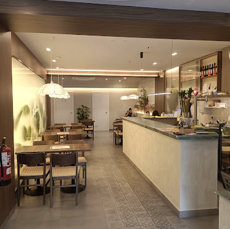

Me encantó! Comí con mi amiga, la pasamos súper rico, la comida deliciosa, el brunch super
completo y muy rico. La atención excelente, las chicas son un amor y muy atentas. Volveremos,
definitivamente nos encantó.
About
Your neighborhood table

Aura Café & Bar is a neighborhood spot in Nou Barris where mornings start with good coffee and afternoons linger over simple, honest food. We serve breakfast and lunch daily, with dinner on site and takeaway when you are on the go.
Our kitchen focuses on approachable plates, fresh pastries, and sandwiches made to order — the kind of place where regulars are greeted by name and newcomers feel at home right away.
LGBTQ+ friendly Woman-owned business
Reviews
What guests say
4,9
Pasan solas de izquierda a derecha · toca para leer
Una experiencia maravillosa desde que cruzas la puerta. Personal amable y atento — Daniel en
sala, la barra encantadora. Ambiente cálido, decoración acogedora, aire acondicionado perfecto. La
comida, la calidad: menú disponible todos los días, humus en su punto, ensalada con serrano
riquísima. Si quieres un buen brunch, no dudes en venir a Aura. A partir de ahora, nuestro lugar
favorito.
Great value for money! This is the best brunch spot I've ever tried. Both the yoghurt and main
dishes are absolutely delicious, and the fruit is super fresh. Highly, highly recommend it.
Buen sitio para desayunar rico, casero y de calidad. La carta es muy variada: tostadas con huevos
benedict, croissants o pancakes. La atención es muy buena y el local está decorado con gusto. Sin
duda una opción de barrio muy recomendable.
Es muy agradable el personal y atenta, una comida exquisita tanto dulce como salada. Una cosa muy
importante es que son pet friendly.
Ya es la segunda vez que vamos a este brunch y es de mis favoritos en Barcelona. La atención 10/10,
hay muy buen ambiente y se nota que todo lo sirven con cariño. Recomiendo los pancakes de frutos
rojos y el matcha fresa. Sin duda volveré.
Sehr feiner Avocado-Toast mit Tomaten und Hummus. Plus grüner Salat als Beilage — lecker.
Cappuccino mit Hafermilch; die Schablone mit Schokolade war nicht so meins.
Location
Visit us
- Address
-
Carrer de Joaquim Valls, 63
Nou Barris, 08016 Barcelona, Spain - Phone
- +34 624 97 59 97
- Hours
- Open daily; closes 9:00 PM (confirm with staff for holidays).
- Price
- Most breakfast and lunch items 1–10 € per person.
Also on OpenStreetMap · Plus code: C5VJ+97 Barcelona